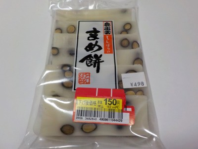
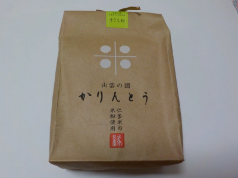
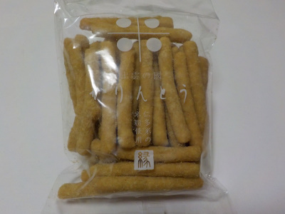

奥出雲とんばらの まめ餅
2022/09/06

稲刈りの季節になりました。それとは関係ないとは思いますが、お餅が安売りしてました。
こんなに安くなっていたら買ってしまいますね。
まめ餅はフライパンで焼いて食べました。お餅に塩が入っているので、別に味付けしなくても美味しかったです。
焼くだけ簡単で気軽に食べれて美味しい。いい商品ですね。
島根県飯石郡飯南町頓原1063-1
2022/09/06

稲刈りの季節になりました。それとは関係ないとは思いますが、お餅が安売りしてました。
こんなに安くなっていたら買ってしまいますね。
まめ餅はフライパンで焼いて食べました。お餅に塩が入っているので、別に味付けしなくても美味しかったです。
焼くだけ簡単で気軽に食べれて美味しい。いい商品ですね。
2021/09/17

米袋風なパッケージがお洒落なかりんとうです。
お土産にぴったりです。（コロナで大変なんだろうな。）

仁多米の米粉で作ったかりんとうなので、普通のかりんとうとは味や食感が違います。
オカキみたいなカリントウです。
個人的にはもっと小さくしてオカキ寄りな方が好きですけど、そうすると見た目が地味だし、ありきたりの商品になってダメかな。
これはこれでいいんでしょう。
頓原味噌が好きです。